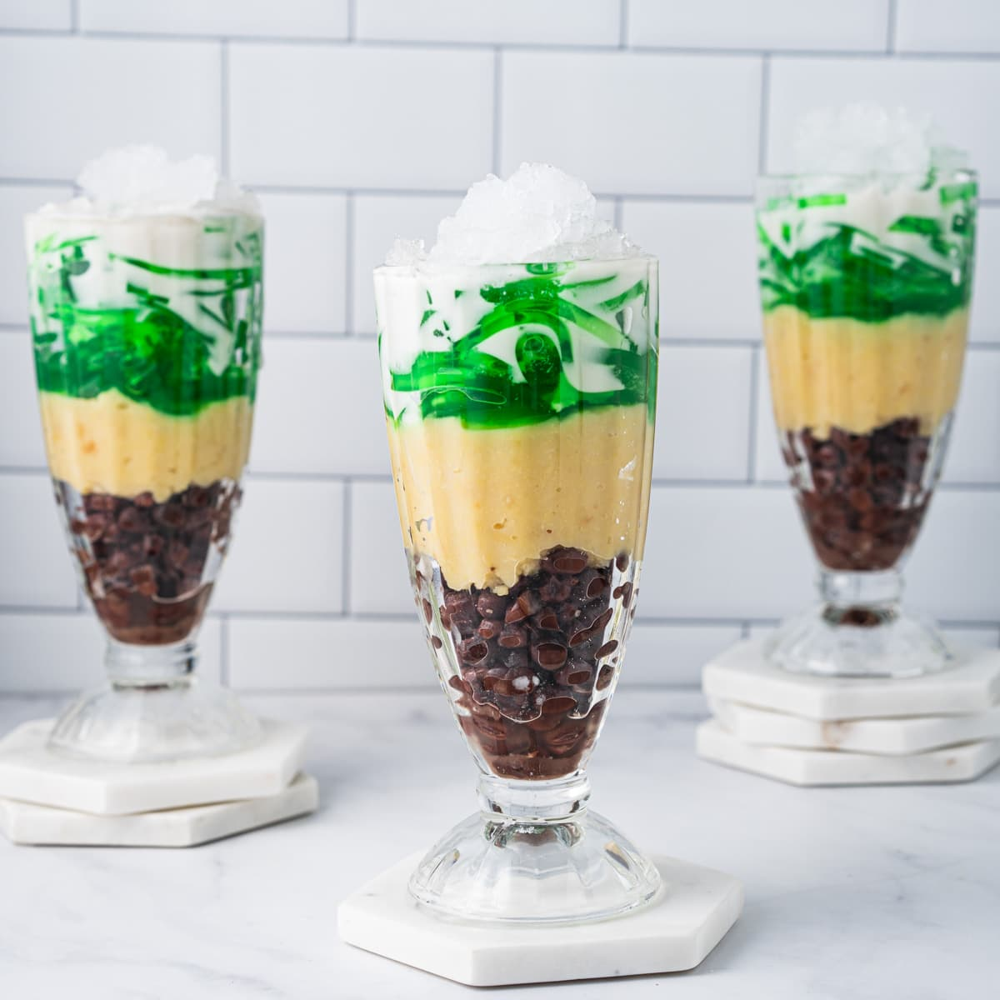

Chè Ba Màu
Three colored dessert

Ingredients
Red Bean Layer
- 1 cup adzuki beans
- water
- 2 tablespoons sugar
Yellow Mung Bean Layer
- ⅔ cup dried split mung bean washed and rinsed until water runs clear
- 2 cups water
- 3 tablespoons sugar
Green Pandan Jelly Layer
- 1 tablespoon
- 2 cups water
- ¼ teaspoon
- 3 tablespoons sugar
Coconut Sauce
- 1 (13.5 oz)
- 2 tablespoons sugar
- ¼ teaspoon salt
- 2 teaspoons tapioca starch
Topping
Instructions
Adzuki Beans
- Soak the adzuki beans in water overnight.
- Drain the beans. In a small saucepan, bring 3 inches of water to a boil, add beans, and cook for 18-20 minutes, or until softened.
- Drain the water and add sugar.
Pandan Jelly
- Bring water to a boil. Add agar agar powder. Stir in pandan extract and sugar until dissolved.
- Pour into a 4×4 glass dish and let it cool at room temperature. Cover and refrigerate for at least 4 hours (or freeze for 2 hours).
- Slice into thin strips or cubes.
Mung Beans
- In a small saucepan, add mung beans and water. Turn the heat on to medium-high and bring to a boil. Simmer for 10-12 minutes, or until softened.
- Add more water, if needed. The consistency should be a smooth paste. Mix in sugar.
Coconut Sauce
- Heat coconut cream until it starts to boil. Whisk in sugar and tapioca starch. Simmer for 2-3 minutes, or until the sugar is dissolved.
- Remove from heat. Let it cool to room temperature and put in the fridge until ready to use.
Assemble the Che Ba Mau
- Layer in red beans, mung bean, and pandan jelly to a cup. Drizzle coconut sauce over the top.
- Top with crushed ice and serve.